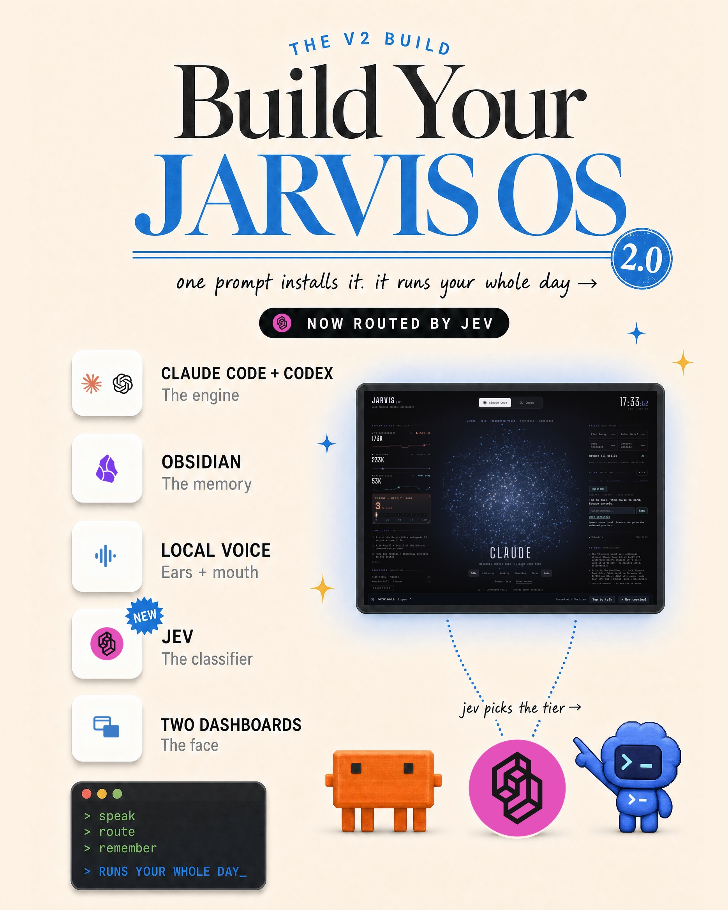
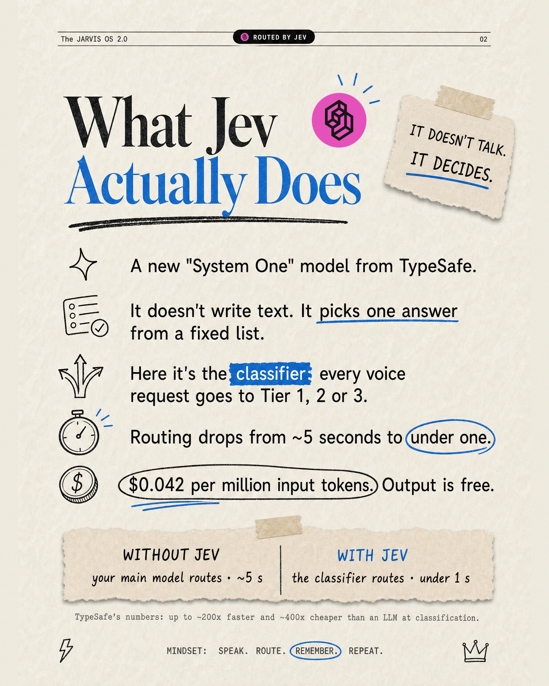
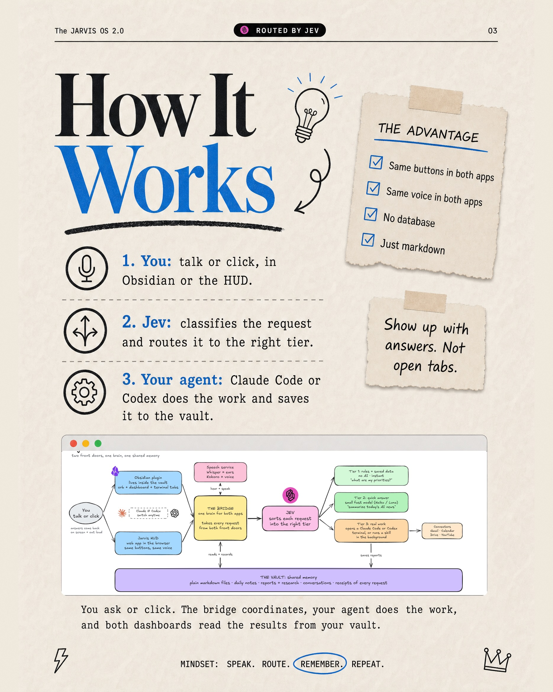
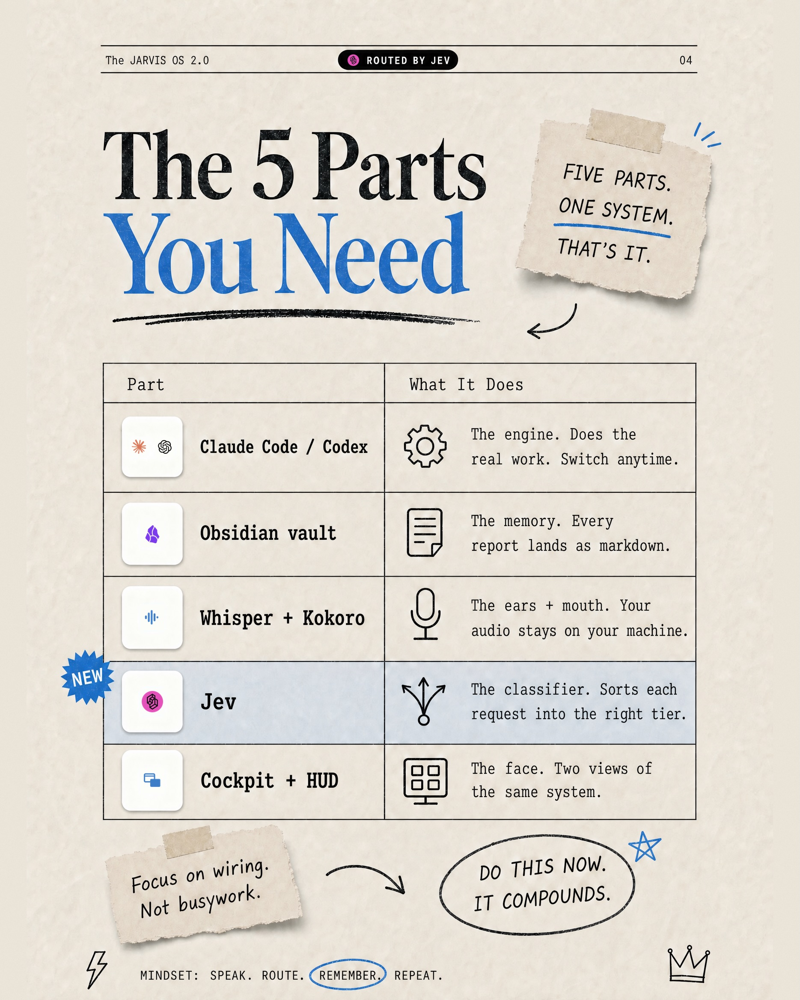
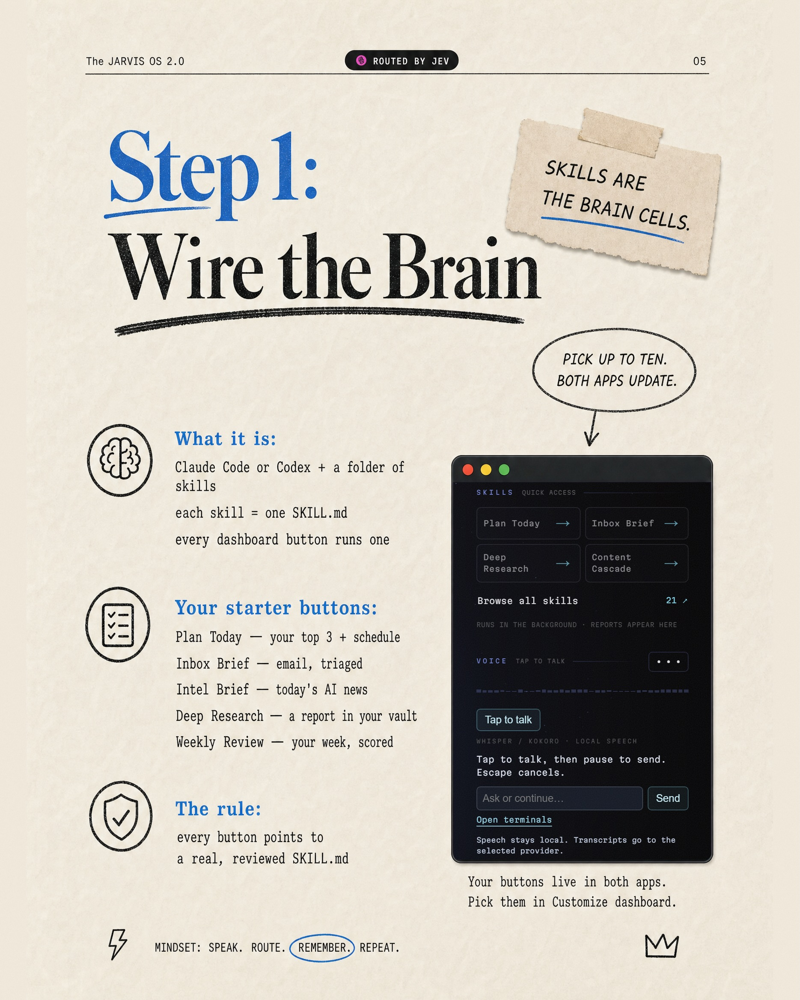
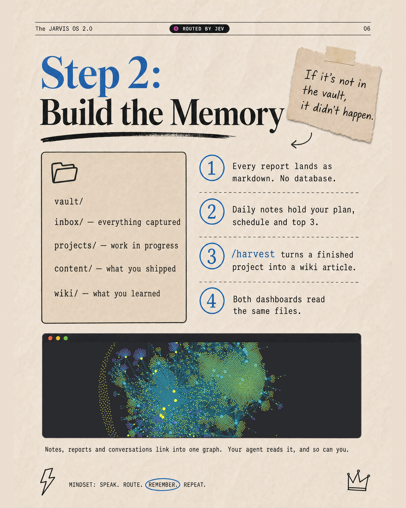
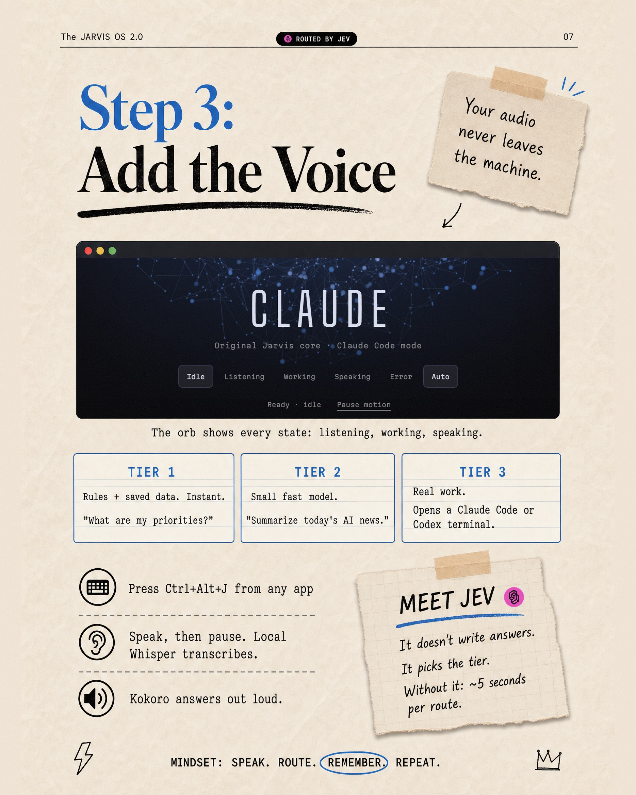
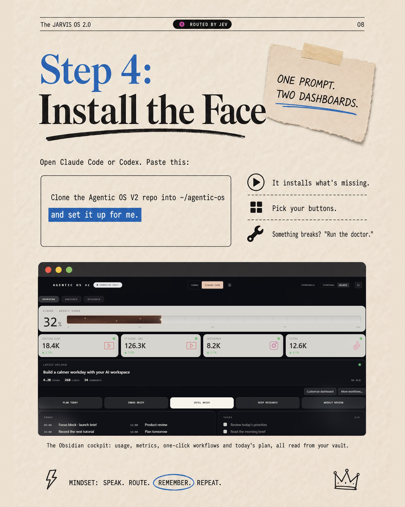

Instagram Post

THE V2 BUILD Build Your JARVIS OS 2.0 one...
carousel (9 slides) (enriched by ClaudeClaw)
Summary
THE V2 BUILD Build Your JARVIS OS 2.0 one prompt installs it | The JARVIS OS 2.0 ROUTED BY JEV 02 What Jev Actually Does... | The JARVIS OS 2.0 ROUTED BY JEV 03 How It Works 1 | The JARVIS OS 2.0 ROUTED BY JEV 04 The 5 Parts You Need F... | The JARVIS OS 2.0 @ ROUTED BY JEV 05 Step 1: Wire the Bra... | The JARVIS OS 2.0 HOSTED BY JEV 06 Step 2: Build the Memo... | The JARVIS OS 2.0 @ ROUTED BY ...
Caption
Comment “Jarvis” to learn how to get my exact setup
1
THE V2 BUILD Build Your JARVIS OS 2.0 one prompt installs it. it runs your whole day → NOW ROUTED BY JEV CLAUDE CODE + CODEX The engine OBSIDIAN The memory LOCAL VOICE Ears + mouth NEW JEV The classifier TWO DASHBOARDS The face JARVIS 17:33 CLAUDE > speak > route > remember > RUNS YOUR WHOLE DAY_ jev picks the tier →
An infographic displays a central dark-themed screen with text "JARVIS" and "CLAUDE" and a starry background, surrounded by a list of five components with icons on the left, and three small character figures at the bottom, illustrating how to build
2
The JARVIS OS 2.0 ROUTED BY JEV 02 What Jev Actually Does IT DOESN'T TALK. IT DECIDES. A new "System One" model from TypeSafe. It doesn't write text. It picks one answer from a fixed list. Here it's the classifier: every voice request goes to Tier 1, 2 or 3. Routing drops from ~5 seconds to under one. $0.042 per million input tokens. Output is free. WITHOUT JEV your main model routes ~5s WITH JEV the classifier routes under 1s TypeSafe's numbers: up to ~200x faster and ~40x cheaper than an LLM at classification. MINDSET: SPEAK. ROUTE. REMEMBER. REPEAT.
An infographic-style presentation slide explains "What Jev Actually Does," detailing its functions, routing speed, and cost with text, icons, and a torn paper graphic comparing "WITHOUT JEV" and "WITH JEV."
3
The JARVIS OS 2.0 ROUTED BY JEV 03 How It Works 1. You: talk or click, in Obsidian or the HUD. 2. J
4
The JARVIS OS 2.0 ROUTED BY JEV 04 The 5 Parts You Need FIVE PARTS. ONE SYSTEM. THAT'S IT. Part What It Does Claude Code / Codex The engine. Does the real work. Switch anytime. Obsidian vault The memory. Every report lands as markdown. Whisper + Kokoro The ears + mouth. Your audio stays on your machine. NEW Jev The classifier. Sorts each request into the right tier. Cockpit + HUD The face. Two views of the same system. Focus on wiring. Not busywork. DO THIS NOW. IT COMPOUNDS. MINDSET: SPEAK. ROUTE. REMEMBER. REPEAT.
An infographic presents a table outlining "The 5 Parts You Need" for a system called "JARVIS OS 2.0," detailing each part's name and function, accompanied by motivational notes.
5
The JARVIS OS 2.0 @ ROUTED BY JEV 05 Step 1: Wire the Brain SKILLS ARE THE BRAIN CELLS. PICK UP TO TEN. BOTH
6
The JARVIS OS 2.0 HOSTED BY JEV 06 Step 2: Build the Memory If it's not in the vault, it didn't happen. vault/ inbox/ - everything captured projects/ - work in progress content/ - what you shipped wiki/ - what you learned 1 Every report lands as markdown. No database. 2 Daily notes hold your plan, schedule and top 3. 3 /harvest turns a finished project into a wiki article. 4 Both dashboards read the same files. Notes, reports and conversations link into one graph. Your agent reads it, and so can you. MINDSET: SPEAK. ROUTE. REMEMBER. REPEAT.
An infographic page titled "Step 2: Build the Memory" illustrates a system for organizing information, featuring a file structure, numbered steps, a quote on a sticky note, and a large visual representation of interconnected data points.
7
The JARVIS OS 2.0 @ ROUTED BY JEV 07 Step 3: Add the Voice Your audio never leaves the machine. CLAUDE Original Jarvis core -> Claude Code mode Idle Listening Working Speaking Error Auto Ready Idle Pause motion The orb shows every state: listening, working, speaking. TIER 1 Rules + saved data. Instant. "What are my priorities?" TIER 2 Small fast model. "Summarize today's AI news." TIER 3 Real work. Opens a Claude Code or Codex terminal. Press Ctrl+Alt+J from any app Speak, then pause. Local Whisper transcribes. Kokoro answers out loud. MEET JEV It doesn't write answers. It picks the tier. Without it: ~5 seconds per route. MINDSET: SPEAK. ROUTE. REMEMBER. REPEAT.
An infographic-style page titled "Step 3: Add the Voice" explains a system called JARVIS OS 2.0, detailing its voice interaction, processing tiers, and a component named JEV, with a dark UI element showing "CLAUDE" and various states.
8
The JARVIS OS 2.0 ROUTES BY JEV 08 Step 4: Install the Face ONE PROMPT. TWO DASHBOARDS. Open Claude Code or Codex. Paste
9
Chase AI AI workflows • agents • Claude Code Follow Message Comment "JARVIS" To get the repo + install prompt Save for later Follow • Chase AI
The image displays a social media post or profile card for "Chase AI" with instructions to comment "JARVIS" to get a repo and install prompt, and an option to save for later, all presented on a textured, light-colored background with decorative elements like torn paper and tape.
All slides






